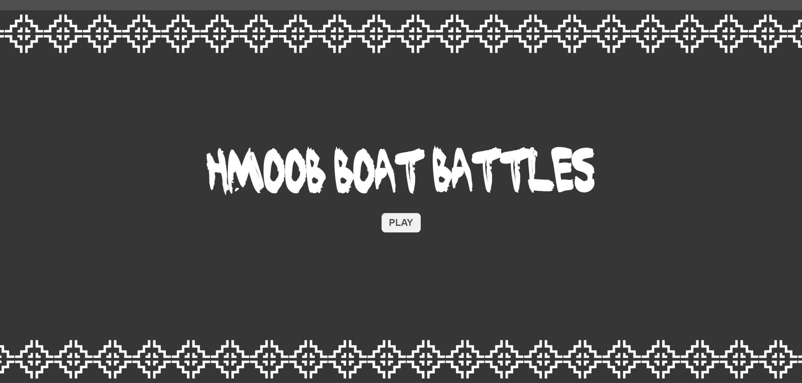
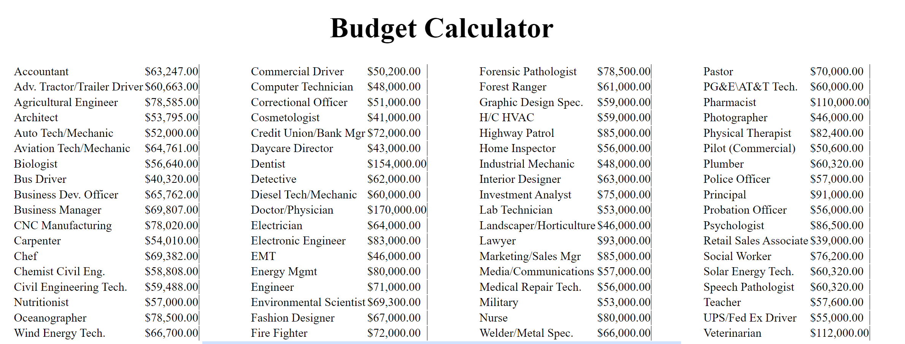
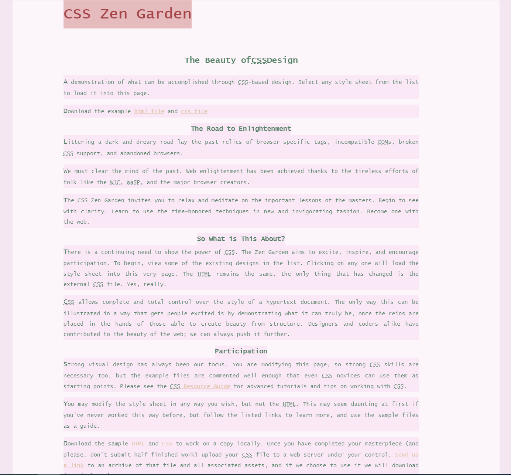

Project

I have created characters in a popular game 'All Star Tower Defense.' Through meticulous design and scripting, I have crafted dynamic and visually captivating characters that enhance the gameplay experience and contribute to the game's overall success. My dedication to detail and commitment to excellence ensure that each character I create not only meets but exceeds the expectations of players, enriching their immersion in the game world and driving engagement.
Collaborating closely with my partner, Evan Her, I played a pivotal role in the development of a Battleship game. Throughout the project, we encountered numerous challenges which demanded effective problem-solving and communication. By working together, we successfully navigated through obstacles, achieving our objectives. Working with a partner enhanced my communication skills through active dialogue and negotiation but also elevated my coding proficiency.
I was tasked to create a Budget calculator. While doing this project I learned all sorts of important skills. I learmed how to manahge my time. I also learned how to manage other people. Being able to manage time allows for the efficant and quailty product.
CSS Zen Garden was the first project I worked on that uses CSS. When doing this project I had many struggles. I over come these struggles by asking my peers for help and looking up solutions online. Doing this proejct perpared me for whats to come in my other works. Since then, I have grown my knowledge in CSS.
